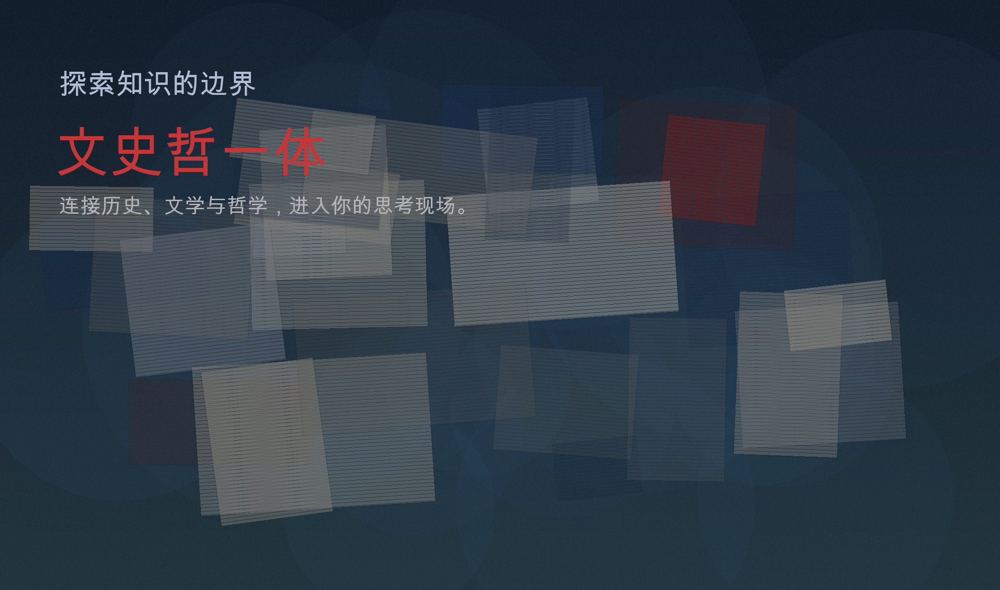

精选项目
公开预览仅展示部分；注册后可查看全部链接关于我
真实经历，不是模板简历
高中文科生 → 汉语言文学本科
系统整理文学与语言学资料
向哲学、心理学等交叉学科延展
长期目标：做真正有用的文史哲学习系统
我是高中文科生，本科读汉语言文学。读书时我一直在找“真正好用”的资料，但常见内容大多是互相搬运，越看越分散，也越难形成自己的判断。
所以我花了很多时间自己整理文学理论、外国文学史、现当代文学史、古代文学史、语言学等内容。毕业后我也意识到，只停留在文学和电影还不够，于是开始认真补哲学、心理学等交叉学科。
我想做的事很朴素：把“好资料 + 好路径”做出来，尽量降低门槛，让没有系统训练的人也能稳稳地进入文史哲世界。对我来说，慢一点没关系，真正有用才重要。
联系
一个明确的行动入口最快联系到我的是邮箱： yuzifudai7@gmail.com。